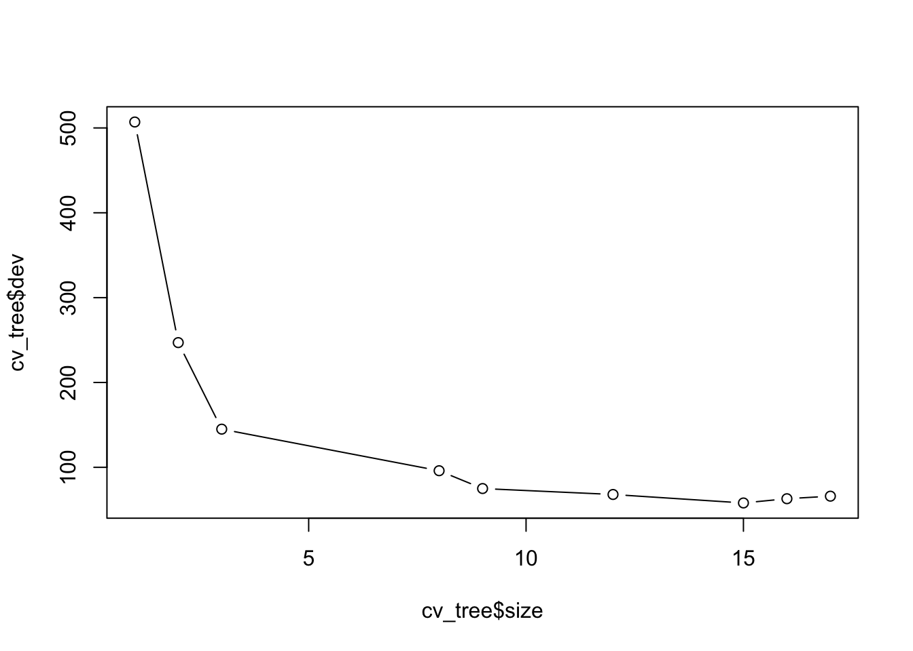
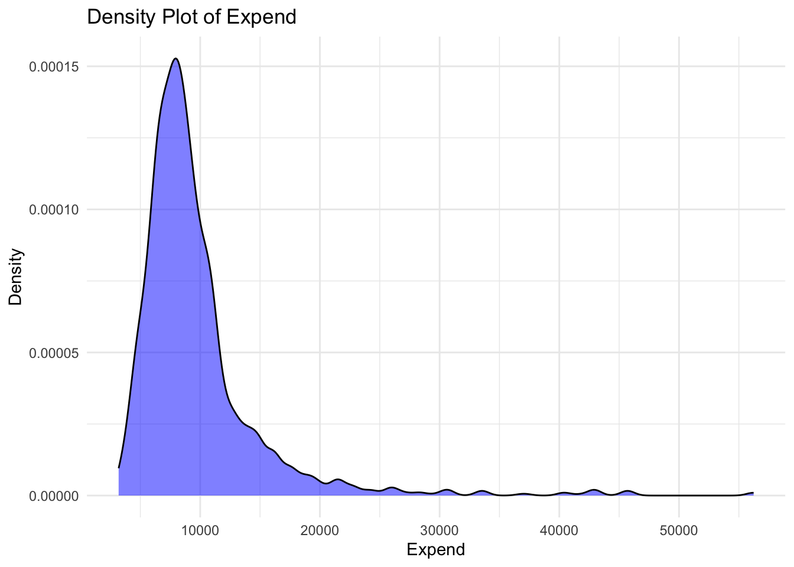
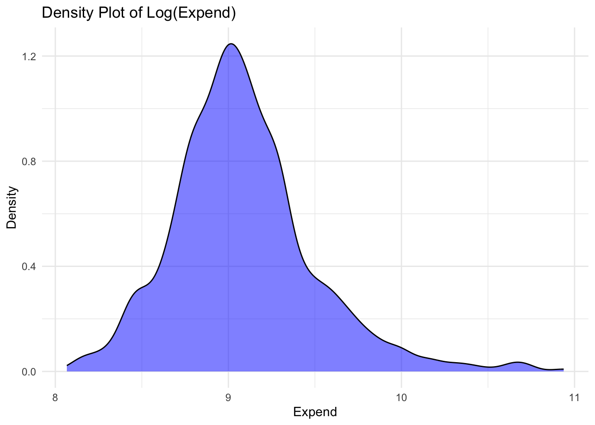
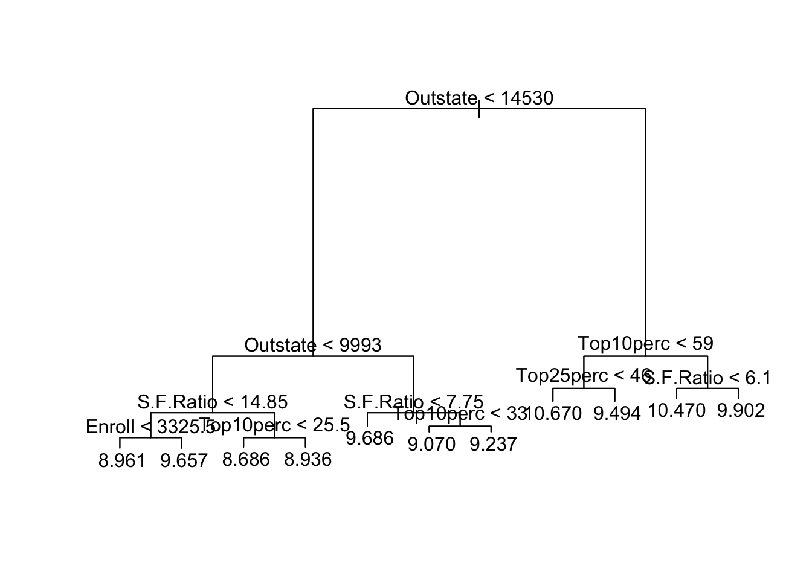
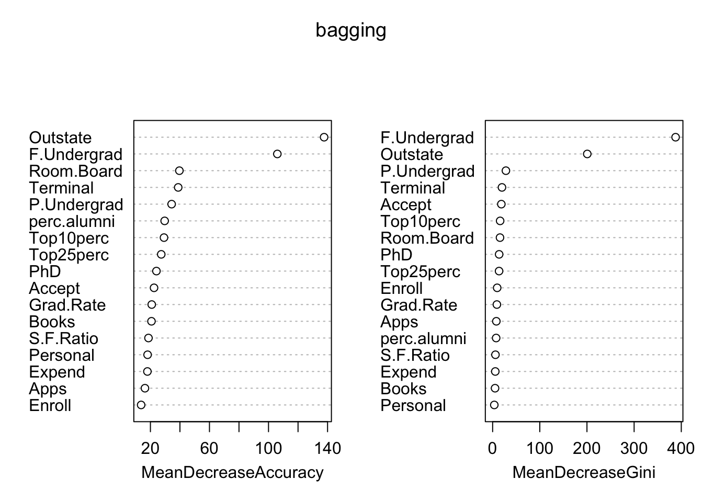
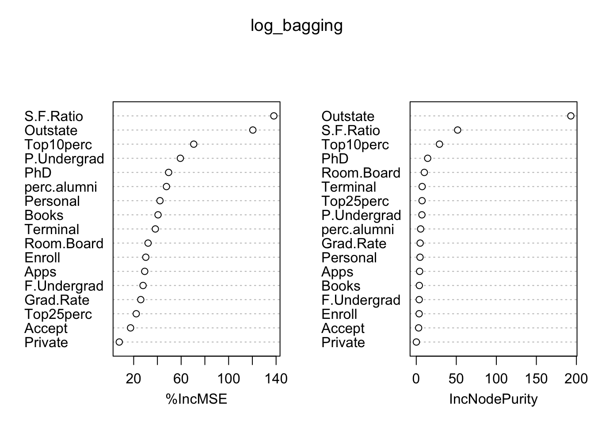

College <- read.csv("CollegeF23.csv")
set.seed(11281975)
index =sample(nrow(College), 2100,replace = FALSE)
C.train=College[index,]
C.test=College[-index,]
dim(C.train)[1] 2100 18dim(C.test)[1] 900 18This project predicts college attendance costs using factors like private status, out-of-state enrollment, and student population, with a random forest model performing best.
College <- read.csv("CollegeF23.csv")
set.seed(11281975)
index =sample(nrow(College), 2100,replace = FALSE)
C.train=College[index,]
C.test=College[-index,]
dim(C.train)[1] 2100 18dim(C.test)[1] 900 18table(C.train$Private)
No Yes
507 1593 table(C.test$Private)
No Yes
244 656 prop.table(table(C.train$Private))
No Yes
0.2414286 0.7585714 prop.table(table(C.test$Private))
No Yes
0.2711111 0.7288889 C.train$Private <- as.factor(C.train$Private)
levels(C.test$Private) <- levels(C.train$Private)
tree_model <- tree(Private ~., data = C.train)
summary(tree_model)
Classification tree:
tree(formula = Private ~ ., data = C.train)
Variables actually used in tree construction:
[1] "F.Undergrad" "Outstate" "Terminal" "Top10perc" "Grad.Rate"
[6] "PhD" "Top25perc" "Expend" "Accept"
Number of terminal nodes: 17
Residual mean deviance: 0.1106 = 230.3 / 2083
Misclassification error rate: 0.01762 = 37 / 2100 9 predictors used: “F.Undergrad”,“Outstate”,“Terminal”,“Top10perc”,“Grad.Rate”,“PhD”,“Top25perc”,“Expend”,“Accept”
test_predictions <- predict(tree_model, C.test, type = "class")
table(C.test$Private, test_predictions) test_predictions
No Yes
No 236 8
Yes 4 652(4+8)/(234 + 8 + 4 + 652)[1] 0.01336303The testing MCR is 1.33%.
# Plot size vs deviance to visualize the optimal cp for pruning
cv_tree <- cv.tree(tree_model, FUN = prune.misclass)
plot(cv_tree$size, cv_tree$dev, type = "b")
Size of pruned tree: 15
prune_model <- prune.misclass(tree_model, best = 15)
plot(prune_model)
text(prune_model, pretty = 0)
summary(prune_model)
Classification tree:
snip.tree(tree = tree_model, nodes = c(52L, 12L))
Variables actually used in tree construction:
[1] "F.Undergrad" "Outstate" "Terminal" "Top10perc" "Grad.Rate"
[6] "PhD" "Top25perc" "Expend" "Accept"
Number of terminal nodes: 15
Residual mean deviance: 0.1375 = 286.7 / 2085
Misclassification error rate: 0.0181 = 38 / 2100 The MCR of the pruned model is 18.1%.
test_predictions <- predict(prune_model, newdata = C.test,type = "class")
table(test_predictions, C.test$Private)
test_predictions No Yes
No 236 7
Yes 8 649(8 + 7)/(236 + 7 + 8 + 649)[1] 0.01666667The MCR is 1.66%.
summary(C.train$Expend) Min. 1st Qu. Median Mean 3rd Qu. Max.
3186 6863 8444 9727 10822 56233 summary(C.test$Expend) Min. 1st Qu. Median Mean 3rd Qu. Max.
3186 6704 8189 9477 10622 45702 ggplot(C.train,aes(x = Expend))+geom_density(fill = "blue", alpha = 0.5)+labs(title = "Density Plot of Expend",x = "Expend",y = "Density")+theme_minimal()
C.train$Expend <-log(C.train$Expend)
C.test$Expend <-log(C.test$Expend)
ggplot(C.train,aes(x = Expend))+geom_density(fill = "blue", alpha = 0.5)+labs(title = "Density Plot of Log(Expend)",x = "Expend",y = "Density")+theme_minimal()
# Create a tree model to predict log(Expend)
log_tree_model <- tree(Expend ~ ., data = C.train)
summary(log_tree_model)
Regression tree:
tree(formula = Expend ~ ., data = C.train)
Variables actually used in tree construction:
[1] "Outstate" "S.F.Ratio" "Enroll" "Top10perc" "Top25perc"
Number of terminal nodes: 11
Residual mean deviance: 0.04209 = 87.93 / 2089
Distribution of residuals:
Min. 1st Qu. Median Mean 3rd Qu. Max.
-0.6196 -0.1252 0.0000 0.0000 0.1086 1.1040 i.5 predictors used for the model: “Outstate” “S.F.Ratio” “Enroll” “Top10perc” “Top25perc”
11 terminal nodes
train_predictions <- predict(log_tree_model, data = C.train)
train_residuals <- C.train$Expend - train_predictions
mean(train_residuals^2)[1] 0.04187042Training MSE: 0.04187042
C.test$Private <- as.factor(C.test$Private)
test_predictions <- predict(log_tree_model, newdata = C.test)
test_residuals <- C.test$Expend - test_predictions
mse_test <- mean(test_residuals^2)
mse_test[1] 0.04207581Testing MSE: 0.04207581
cv_tree_2 <- cv.tree(log_tree_model)
plot(cv_tree_2$size, cv_tree_2$dev, type = "b")
Size of pruned tree: 14
#Plot pruned tree model
prune_log_model <- prune.tree(log_tree_model, best = 14)Warning in prune.tree(log_tree_model, best = 14): best is bigger than tree sizeplot(prune_log_model)
text(prune_log_model, pretty = 0)
# Training MSE of pruned tree
train_predictions <- predict(prune_log_model, data = C.train)
train_residuals <- C.train$Expend - train_predictions
mean(train_residuals^2)[1] 0.04187042Training MSE of pruned tree model: 0.04187042
#Predict log(Expend) with testing data
test_predictions <- predict(prune_log_model, newdata = C.test)
test_residuals <- C.test$Expend - test_predictions
mean(test_residuals^2)[1] 0.04207581Testing MSE: 0.04207581
(cor(train_predictions, C.train$Expend))^2[1] 0.751356The r squared of the training data of 75.14%
(cor(test_predictions, C.test$Expend))^2[1] 0.7460448The r squared of the testing data is 74.6%
set.seed(705780612)
# Create a bagging model
C.train$Private <- as.factor(C.train$Private)
bagging <- randomForest(Private ~., data = C.train, mtry = 17, importance = TRUE)
bagging
Call:
randomForest(formula = Private ~ ., data = C.train, mtry = 17, importance = TRUE)
Type of random forest: classification
Number of trees: 500
No. of variables tried at each split: 17
OOB estimate of error rate: 0.81%
Confusion matrix:
No Yes class.error
No 496 11 0.021696252
Yes 6 1587 0.003766478importance(bagging) No Yes MeanDecreaseAccuracy MeanDecreaseGini
Apps 7.996776 14.63382 16.29653 7.852547
Accept 16.440909 16.77159 22.45017 18.458509
Enroll 9.946075 10.29376 13.71551 9.608839
Top10perc 24.656129 22.80333 29.19540 15.902975
Top25perc 21.502638 25.66150 27.33541 13.640813
F.Undergrad 81.217340 78.50145 105.98728 387.934372
P.Undergrad 22.044252 34.70942 34.37470 28.152861
Outstate 94.639180 97.70798 137.65480 200.661968
Room.Board 14.147645 38.00999 39.62783 15.609351
Books 15.064323 21.26806 20.72064 5.125512
Personal 11.723063 15.97299 18.08786 3.527622
PhD 20.798156 18.54041 24.07538 13.790794
Terminal 38.247797 23.37693 38.82201 19.796038
S.F.Ratio 13.228533 15.97735 18.68794 5.975525
perc.alumni 26.961270 18.60419 29.63970 7.436632
Grad.Rate 18.230071 14.98763 20.89308 8.983862
Expend 10.470543 15.27206 17.96734 5.633619# Plot variable importance
varImpPlot(bagging)
The most importance variables is “Outstate”.
# Report testing MCR
predictions <- predict(bagging, newdata = C.test)
actual <- C.test$Private
misclassification_rate <- mean(predictions != actual)
misclassification_rate[1] 0.001111111The testing MCR is 0.11%
# Create a random forest model with mtry = 4
rf <- randomForest(Private ~., data = C.train, mtry = 4, importance = TRUE)
rf
Call:
randomForest(formula = Private ~ ., data = C.train, mtry = 4, importance = TRUE)
Type of random forest: classification
Number of trees: 500
No. of variables tried at each split: 4
OOB estimate of error rate: 0.57%
Confusion matrix:
No Yes class.error
No 498 9 0.017751479
Yes 3 1590 0.001883239# Report testing MCR
predictions.2 <- predict(rf, newdata = C.test)
misclassification_rate <- mean(predictions.2 != C.test$Private)
misclassification_rate[1] 0.003333333The testing MCR is 0.33%
# Create a bagging model to predict logExpend
log_bagging <- randomForest(Expend ~., data = C.train, mtry = 17, importance = TRUE)
log_bagging
Call:
randomForest(formula = Expend ~ ., data = C.train, mtry = 17, importance = TRUE)
Type of random forest: regression
Number of trees: 500
No. of variables tried at each split: 17
Mean of squared residuals: 0.003817121
% Var explained: 97.73# Report important variables
importance(log_bagging) %IncMSE IncNodePurity
Private 7.85475 0.1365468
Apps 29.29824 4.1939672
Accept 17.38036 2.9655459
Enroll 30.21717 3.5845051
Top10perc 70.60875 28.9734666
Top25perc 22.16605 7.2507768
F.Undergrad 27.89312 3.6979415
P.Undergrad 59.33170 7.0736315
Outstate 120.41569 193.0642281
Room.Board 32.13347 10.0754965
Books 40.52761 3.8407706
Personal 42.15975 4.6976768
PhD 49.44477 14.2506218
Terminal 38.25795 7.3654831
S.F.Ratio 138.11138 51.6618400
perc.alumni 47.62025 5.4791384
Grad.Rate 25.96474 4.8544786# Plot variable importance
varImpPlot(log_bagging)
The most importance predictor based on %IncMSE is S.F ratio
# Predict log(Expend) with testing data
test_predictions.2 <- predict(log_bagging, newdata = C.test)
test_residuals <- C.test$Expend - test_predictions.2
mean(test_residuals^2)[1] 0.002179744The testing MSE 0.218%
The R squared of the model is 97.73%
log_bagging_4 <-randomForest(Expend~., data = C.train, mtry = 4, importance = TRUE)
log_bagging_4
Call:
randomForest(formula = Expend ~ ., data = C.train, mtry = 4, importance = TRUE)
Type of random forest: regression
Number of trees: 500
No. of variables tried at each split: 4
Mean of squared residuals: 0.003541376
% Var explained: 97.9predictions.3 <- predict(log_bagging_4, newdata = C.test)
mean((predictions.3 - C.test$Expend)^2)[1] 0.002079963The MCR is 0.21%
The R squared is 97.9%
C.test$pred <- predictions.3
ggplot(C.test,aes(x = Expend, y = predictions.3))+geom_point(color = "green", alpha = 0.6)+ # Scatter plot
geom_abline(slope = 1, intercept = 0, color = "red", linetype = "dashed") + # 45-degree line
labs(title = "Actual vs Predicted log(Expend)",x = "Actual log(Expend)",y = "Predicted log(Expend)")+
theme_minimal()The plot shows a linear relationship in the actual and the predicted data, and the predicted data matches the actual data really well.